Who's On First Browser (v2) This is a blog post by thisisaaronland that was published on Dec 20, 2019 and tagged golang, whosonfirst, wof and data
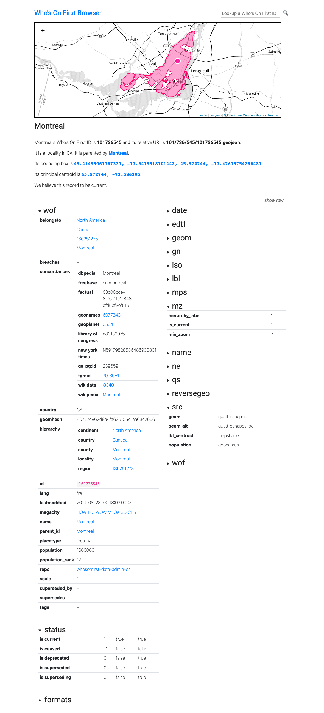
go-whosonfirst-browser is a web application written in the Go programming language for rendering known Who’s On First (WOF) IDs in a number of formats including HTML, SVG, PNG and GeoJSON. It uses Bootstrap for HTML layouts and Leaflet, Tangram.js and Nextzen vector tiles for rendering maps. All of these dependencies are bundled with the tool and served locally. With the exception of the vector tiles (which can be cached) and a configurable data source there are no external dependencies. It is designed to work locally and remotely, including other people’s cloud services, with a variety of Who’s On First datasources.
Some things this tool is not:
It is not a replacement for the Who’s On First Spelunker.
At least not yet.
go-whosonfirst-browser was designed to be a simple display tool for known Who’s On First (WOF) IDs and records. That constitutes a third to half of what the Spelunker does (the remainder being list views and facets) so in principle it would be easy enough to add the same functionality here. Except for the part where the Spelunker is backed by a real search engine (Elasticsearch).
The principle advantage of migrating Spelunker functionality to this package is that it does not have any external dependencies and has support for multiple data sources and caches and can be pre-compiled in to a standalone binary tool. The principle disadvantage would be that experimenting and developing code and functionality in Python (used by the existing Spelunker) has a lower barrier to entry than doing the same in Go (used by this package).
For the time being though they are separate beasts.
It is not a search engine.
This is a tool that is primarily geared towards displaying known Who’s On First IDs. It does not maintain an index, or a list of known records, before it displays them.
It would be easy enough to add flags to use an external instance of the Pelias Placeholder API for basic search functionality so we’ll add that to the list of features for a “2.x” release.
It might also be easy enough to preload a Bleve index, or generate one at runtime depending on the data source and its size, but that is currently out of scope for the project.
It is not a tool for editing Who’s On First documents.
At least not yet.
Interestingly the code that renders Who’s On First (WOF) property dictionaries in to pretty HTML tables is the same code used for the experimental Mapzen “Yes No Fix project”. That functionality has not been enabled or tested with this tool yet.
On the other hand editing anything besides simple key-value pairs means identifying all the complex types, defining rules for how and when they can be updated (or added) and then maintaining all the code to do that. These are all worthwhile efforts but they are equally complex and not things this tool aims to tackle right now.
If you’d like to read more about the subject of editing Who’s On First documents have a look at:
- Dan Phiffer’s blog posts about the Boundary Issues editing tool.
- Gary Gale’s Three Steps Backwards, One Step Forwards; a Tale of Data Consistency and JSON Schema.
It does not retrieve, render or display “alternate” geometries
It really should but today it does not. Hopefully it will, soon.
For example
$> bin/whosonfirst-browser -enable-all -nextzen-api-key {NEXTZEN_APIKEY}
2019/12/14 18:22:16 Listening on http://localhost:8080
The default data source for the browser tool is to fetch records from the data.whosonfirst.org servers so all valid WOF records are available. The default caching source for the browser tool is an in-memory data structure that last only as long as the application is running. Other more persistent caching strategies, like local files on disk or to a remote host, are discussed below.
Then if you visited http://localhost:8080/id/101736545 in your web browser you would see this:
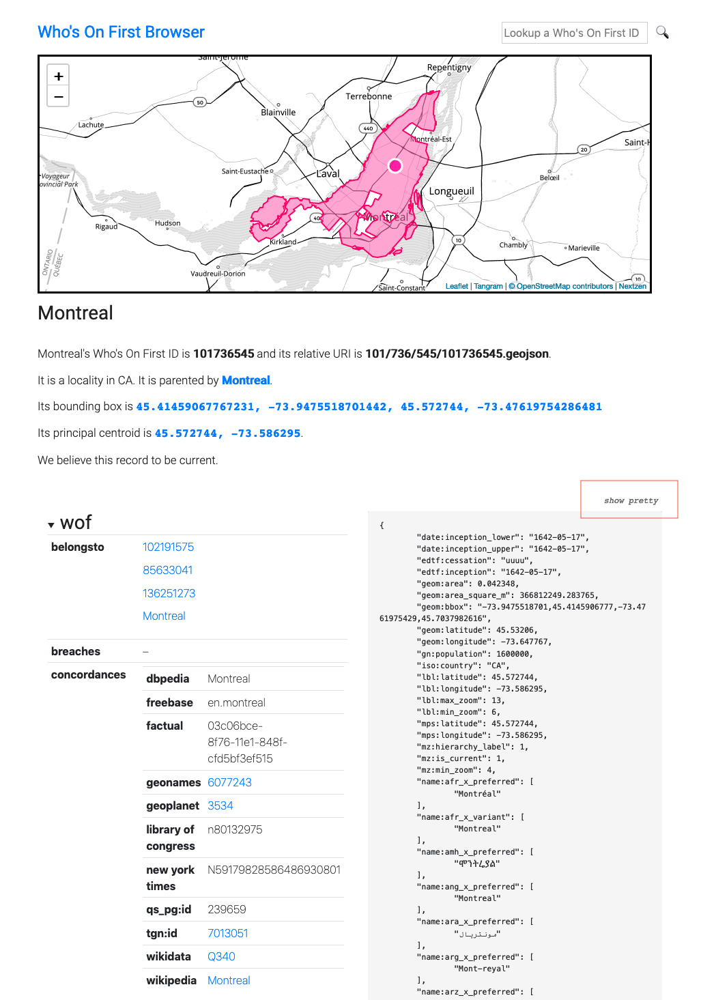
By default Who’s On First (WOF) properties are rendered as nested (and collapsed) trees but there is are handy show raw and show pretty toggles for viewing the raw WOF GeoJSON data.
Output formats
The following output formats are available.
GeoJSON
A raw Who’s On First (WOF) GeoJSON document. For example if you visited http://localhost:8080/geojson/101736545 you would see this:
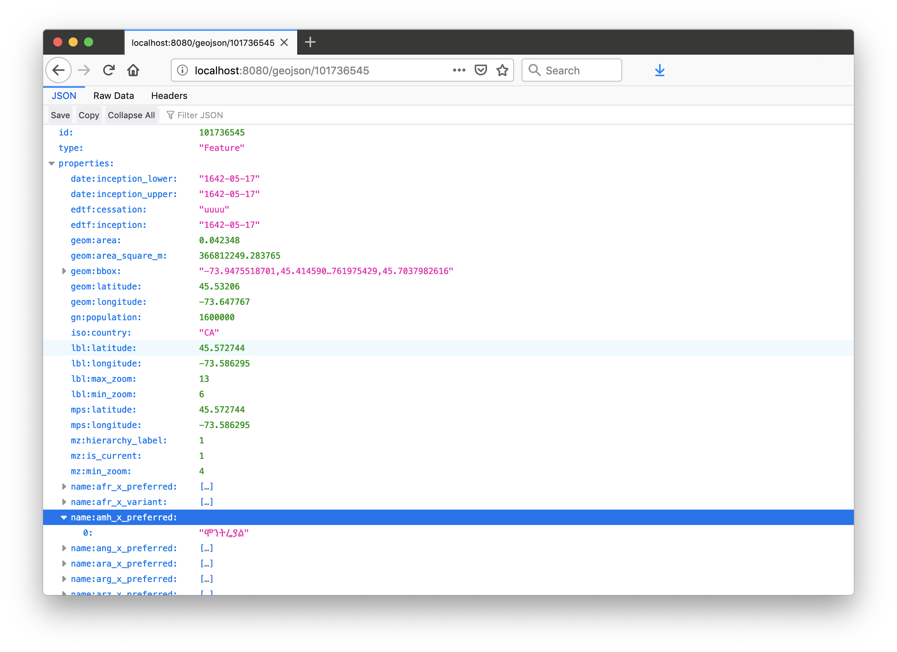
HTML
A responsive HTML table and map for a given WOF ID. For example if you visited http://localhost:8080/id/101736545 you would see this:
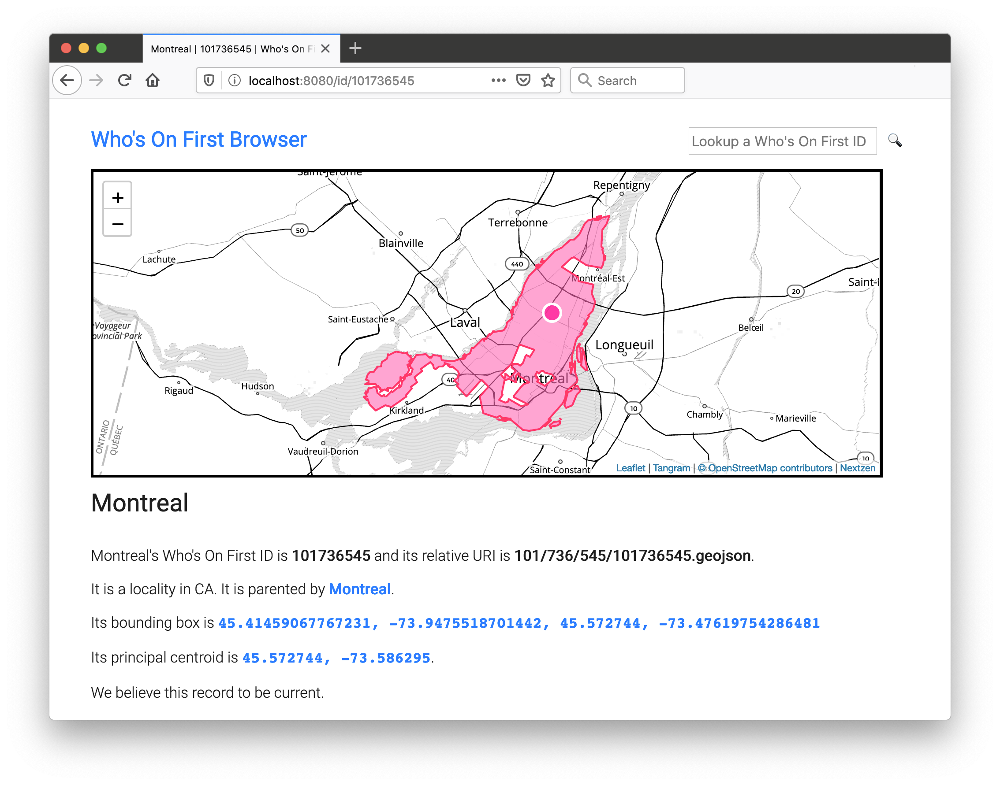
PNG
A PNG-encoded representation of the geometry for a given WOF ID. For example if you visited http://localhost:8080/png/101736545 you would see this:
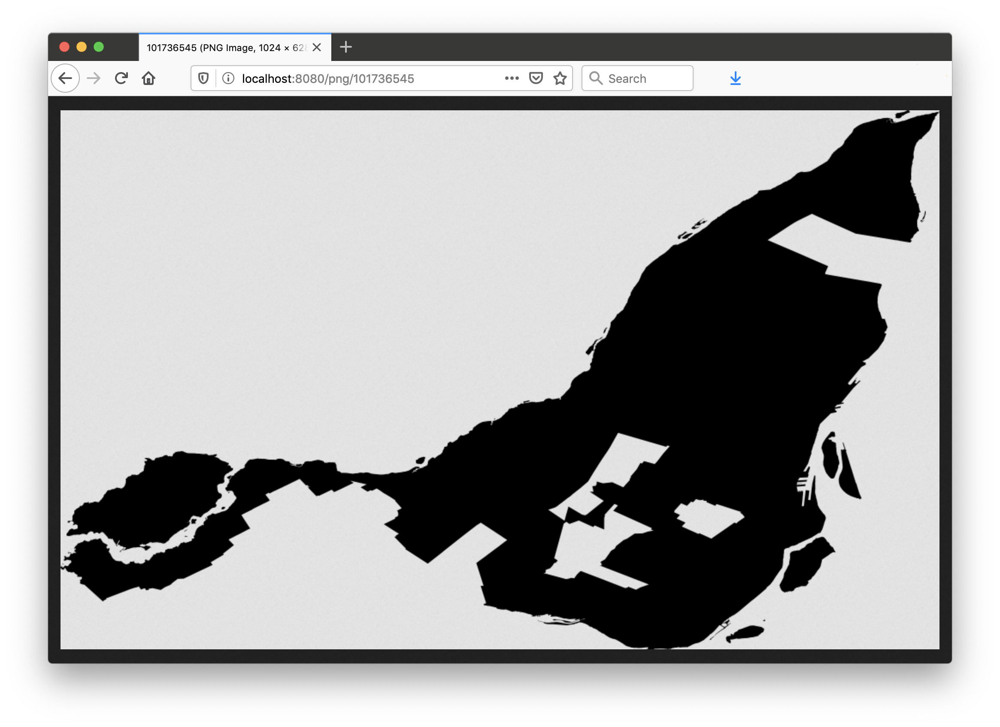
“select”
A JSON-encoded slice of a Who’s On First (WOF) GeoJSON document matching a query pattern. For example if you visited http://localhost:8080/select/101736545?select=properties.wof:concordances you would see this:
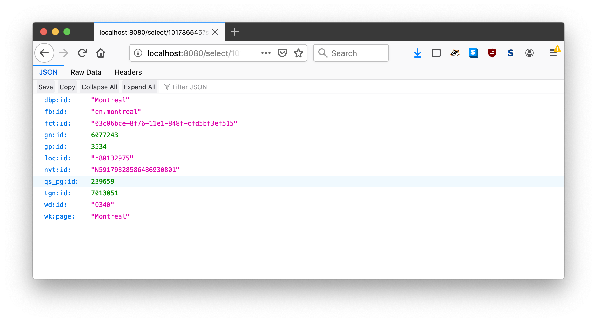
As of this writing multiple select parameters are not supported. select parameters that do not match the regular expression defined in the -select-pattern flag (at startup) will trigger an error.
SPR (Standard Places Response)
A JSON-encoded “standard places response” for a given WOF ID. For example if you visited http://localhost:8080/spr/101736545 you would see this:
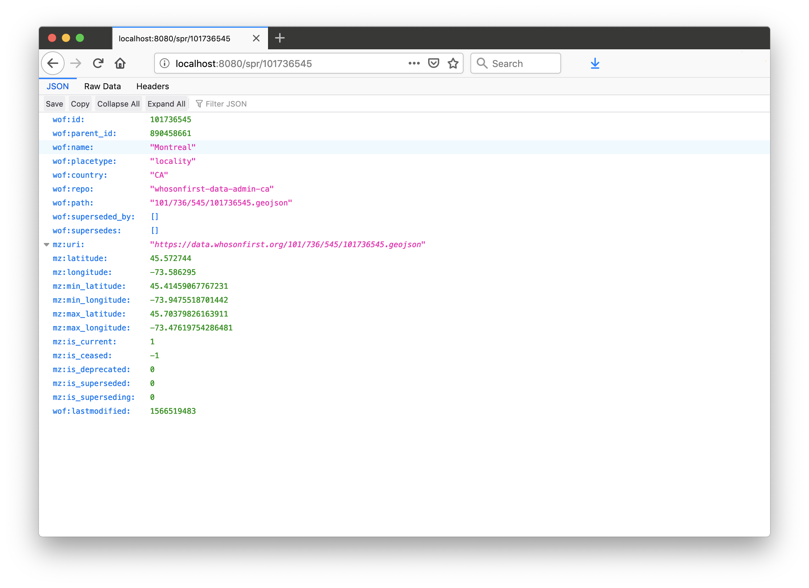
SVG
An XML-encoded SVG representation of the geometry for a given WOF ID. For example if you visited http://localhost:8080/svg/101736545 you would see this:
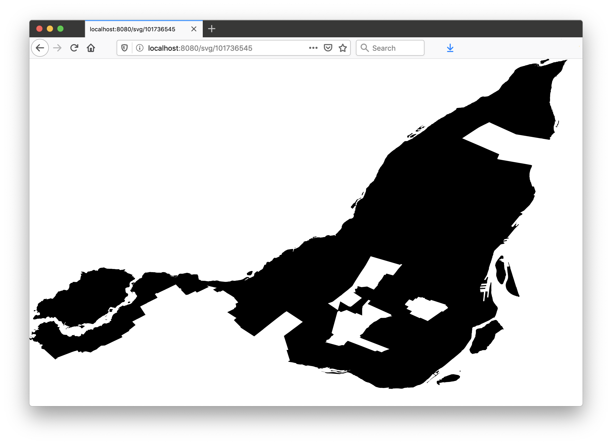
Tiles
go-whosonfirst-browser uses Nextzen vector data tiles and the Tangram.js rendering library for displaying maps. The Tangram code and styling assets are bundled with this tool and served directly but, by default, tile data is retrieved from the Nextzen servers.
It is possible to cache those tiles locally using the -proxy-tiles flag at start up. The default cache for proxying tiles is an ephemiral in-memory cache but you can also specify an alternative go-cache cache.Cache source using the -proxy-tiles-cache flag. Caches are discussed in detail below.
You will need a valid Nextzen API key in order for map tiles to work. If no API key is present then the browser tool will display the SVG rendering for a place’s geometry. For example:
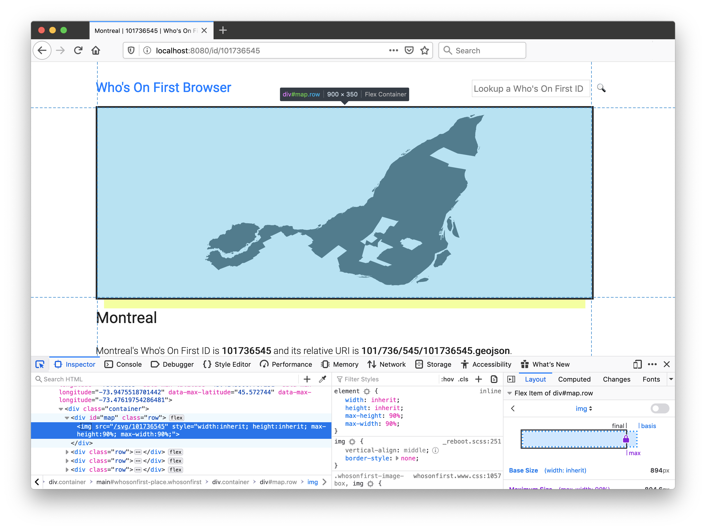
Data sources and Caches
go-whosonfirst-browser uses the go-reader reader.Reader and go-cache cache.Cache interfaces for reading and caching data respectively. This enables the “guts” of the code to be developed and operate independently of any individual data source or cache.
Readers and caches alike are instantiated using the reader.NewReader or cache.NewCache methods respectively. In both case the methods are passed a URI string indicating the type of instance to create. For example, to create a local filesystem based reader, you would write:
import (
"github.com/whosonfirst/go-reader"
)
r, _ := reader.NewReader("fs:///usr/local/data")
fh, _ := r.Read("123/456/78/12345678.geojson")
The base go-reader package defines a small number of built-in “readers” like the one for reading from the local filesystem. Others types of readers are kept in separate packages and loaded as-need. Similar to the way the Go language database/sql package works these readers announce themselves to the go-reader package when they are initialized.
For example, if you wanted to use a Go Cloud Blob reader, to fetch data from a cloud provider’s storage system, you would do something like this:
import (
"github.com/whosonfirst/go-reader"
_ "github.com/whosonfirst/go-reader-blob"
)
r, _ := reader.NewReader("s3://{S3_BUCKET}?region={S3_REGION}")
fh, _ := r.Read("123/456/78/12345678.geojson")
The same principles appy to caches.
The default whosonfirst-browser tool allows data sources to be specified as a local filesystem or a remote HTTP(S) endpoint and caching sources as a local filesystem or an ephemiral in-memory lookup table.
This is what the code for default whosonfirst-browser tool looks like, with error handling omitted for the sake of brevity:
package main
import (
"context"
_ "github.com/whosonfirst/go-reader-http"
"github.com/whosonfirst/go-whosonfirst-browser"
)
func main() {
ctx := context.Background()
browser.Start(ctx)
}
The default settings for go-whosonfirst-browser are to fetch data from the https://data.whosonfirst.org servers and to cache those records in an ephemeral in-memory go-cache cache.
If you wanted, instead, to read data from the local filesystem you would start the browser like this:
$> bin/whosonfirst-browser -enable-all \
-reader-source 'fs:///usr/local/data/whosonfirst-data-admin-us/data' \
-nextzen-api-key {NEXTZEN_APIKEY}
Or if you wanted to cache WOF records to the local filesystem you would start the browser like this:
$> bin/whosonfirst-browser -enable-all \
-cache-source 'fs:///usr/local/cache/whosonfirst' \
-nextzen-api-key {NEXTZEN_APIKEY}
The browser tool will work with any WOF-like data including records outside of the “core” dataset. For example this is how you might use the browser tool with the SFO Museum architecture dataset:
$> bin/whosonfirst-browser -enable-all \
-reader-source 'fs:///usr/local/data/sfomuseum-data-architecture/data' \
-nextzen-api-key {NEXTZEN_APIKEY}
And then if you went to http://localhost:8080/id/1159554801 in your browser you would see:
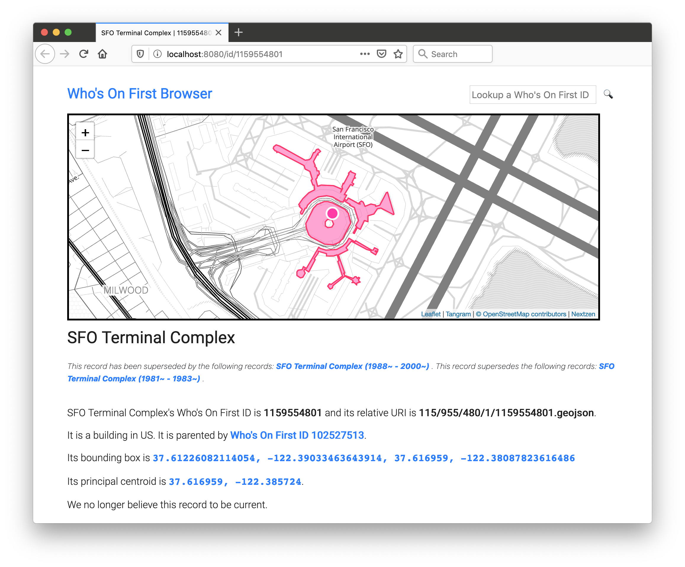
The “guts” of the application live in the browser.go package. This is by design to make it easy (or easier, at least) to create derivative browser tools that use custom readers or caches.
For example if you wanted to create a browser that read files using the Go Cloud Blob package you would write:
// cmd/blob-browser/main.go
package main
import (
"context"
_ "github.com/whosonfirst/go-reader-blob"
"github.com/whosonfirst/go-whosonfirst-browser"
)
func main() {
ctx := context.Background()
browser.Start(ctx)
}
And then you would start the browser tool like this:
$> bin/blob-browser -enable-all \
-reader-source 's3://{BUCKET}?region={REGION}' \
-nextzen-api-key {NEXTZEN_APIKEY}
2019/12/18 08:44:15 Listening on http://localhost:8080
Or if you wanted to read data from a specific GitHub repository:
// cmd/github-browser/main.go
package main
import (
"context"
_ "github.com/whosonfirst/go-reader-github"
"github.com/whosonfirst/go-whosonfirst-browser"
)
func main() {
ctx := context.Background()
browser.Start(ctx)
}
And then:
$> bin/github-browser -enable-all \
-reader-source 'github://whosonfirst-data/whosonfirst-data-admin-ca'
-nextzen-api-key {NEXTZEN_APIKEY}
2019/12/18 08:44:15 Listening on http://localhost:8080
As of this writing the browser.go packages does everything including parsing command line flags. This is not ideal and flag parsing will be moved in to a separate method and be made extensible.
go-whosonfirst-browser-sqlite
To make this idea a little more concrete we’ve created a separate go-whosonfirst-browser-sqlite package which is an instance of the Who’s On First browser that reads all of its data from a SQLite database.
This browser uses the still experimental go-reader-database-sql reader package which is designed to work with anything that implements the Go languages database/sql DB interface.
The instantiate a database-sql reader you pass it a URI string in the form of:
"sql://" + {DATABASE_DRIVER} + "/" + {DATABASE_TABLE} + "/" + {DATABASE_KEY} + "/" {DATABASE_VALUE} + "?dsn=" + {DATABASE_DSN}
Or:
sql://sqlite/geojson/id/body?dsn=/usr/local/data/fr.db
Which is interpreted by the reader as:
"SELECT body FROM geojson WHERE id = {WOF_ID}" WITH sqlite DATABASE /usr/local/data/fr.db
The database-sql reader is designed to be agnostic about databases and database tables but to complete the example let’s try using it with a SQLite database produced by the go-whosonfirst-sqlite-features-index package. The following commands will produce a WOF SQLite distribution database for administrative data in France using the whosonfirst-data-admin-fr GitHub repository as its data source:
$> cd /usr/local/go-whosonfirst-sqlite-features-index $> go run -mod vendor cmd/wof-sqlite-index-features/main.go -all \ -dsn /usr/local/data/fr.db \ -mode 'git://' \ https://github.com/whosonfirst-data/whosonfirst-data-admin-fr.git ...time passes
This creates a new SQLite database in /usr/local/data/fr.db which you can then use as a database for your SQLite-enabled Who’s On First browser like this:
$> cd /usr/local/go-whosonfirst-browser-sqlite
$> go run cmd/whosonfirst-browser/main.go -enable-all \
-reader-source 'sql://sqlite3/geojson/id/body?dsn=/usr/local/data/fr.db' \
-nextzen-api-key {NEXTZEN_APIKEY}
2019/12/19 13:12:26 Listening on http://localhost:8080
And then when you visit http://localhost:8080/id/85683385 you should see this:
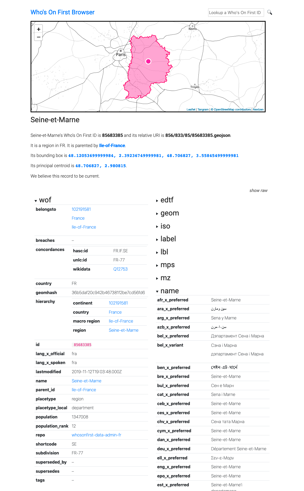
As of this writing the Who’s On First browser only supports a single “reader” source and “combined” SQLite distributions for WOF data (for example all administrative in a single database rather per-country databases) are not available. If you want to create your own combined databases Stephen Epps has written a handy Bundling “combined” SQLite distribution files guide.
In late 2017 when it became clear that Mapzen would shut down…
go-whosonfirst-browser is version two of the previously name go-whosonfirst-static package that we published in 2018.